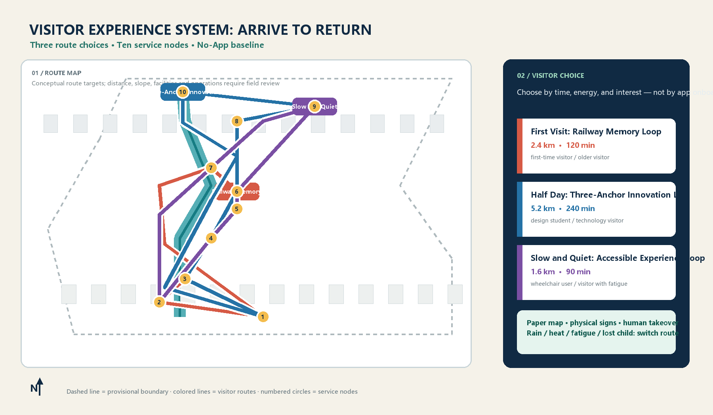

Railway memory first
Start with the Jingzhang timeline, materials, and heritage clues before AI scenes.
The visitor is the first user: arrival, choice, walking, rest, testing, and return are designed as an executable, stoppable, feedback-ready journey.
Official boundaries, streets, slopes, and facility conditions remain pending; routes and areas are provisional design discussion.

Three routes: First Visit 2.4 km / 120 min; Half Day 5.2 km / 240 min; Slow and Quiet 1.6 km / 90 min.
Start with the Jingzhang timeline, materials, and heritage clues before AI scenes.
Connect rail, neighborhoods, campuses, and Qinghe beyond event days.
Publishing, consultation, results, and rest share one public room; demos say real, test, or pending.
Show yielding, interoperability, offline mode, and human takeover; stop first, explain second.
Arrival → Memory Yard → heritage park → AI Origin Courtyard → north return
2.4 km / 120 min · seat, water, and wayfinding every 300–400 m · no phone required
Arrival → AI Origin → Zhongzhiyuan Test Harbor → Dazhongsi lounge → rail return
5.2 km / 240 min · skip, revisit, or change route at each anchor
Arrival → rain garden → quiet yard → family service point → arrival
1.6 km / 90 min · low slope, continuous rest, accessible toilet, quiet hours
Paper map, water, toilet, staffed desk.
Large-print route board, color, icons, language choice.
Touchable material, shade, child-height labels.
Continuous walking, low-glare light, shade branch.
Visible blue-green system; safe detour in storms.
Open-source hall, results wall, service desk, shared tables.
Red takeover button; anyone may pause.
Yielding, interoperability, offline mode, stop line, result board.
Nursing place, child boundary, quiet seats, accessible toilet.
Rail direction, human update, paper alternative.
Recommend the 1.6 km quiet loop, shade, indoor nodes, and nearest seat.
Rain garden and test harbor become view-only; use covered paths.
Paper maps, physical color bands, and staff service remain complete.
Return to the takeover station; use route numbers, never public personal data.
Provisional boundary; recalculate on official polygon
Recomputed from structured green-space layer
Recomputed from structured public-space layer
Routes, arrival, return, ten nodes.
Research, overall design, key areas.
AI Origin, Zhongzhiyuan, Dazhongsi.
Linked to provisional geometry.
Retain, renovate, renew, new-build.
Three routes and accessible branches.
Heritage park, rain garden, rest.
Foyer, courtyard, test harbor, return.
Publishing, takeover, offline, stop.
Convenience, accessibility, weather, risk.
Deterministic, spatial, visual, professional review.
sources.json, processed data, site package.
Routes and areas remain provisional.
Structured journey: visual/assets/visitor_journey.json; route data: visual/assets/visitor_routes.json (GeoJSON content). Recheck routes, service radii, slopes, and operating metrics when official data arrives; this does not replace approvals, redlines, fire controls, or operations commitments.